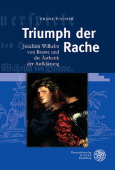
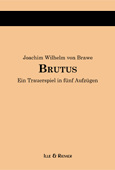
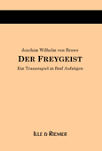

|

Vorwort zum Vorwort:
Untenstehende Geleitworte stammen aus dem Jahr 2002 und bleiben so da stehen, auch wenn sie inzwischen etwas überholt sind. 2013 ist meine Brawe-Dissertation »Triumph der Rache« erschienen, für die unsere jahrzehntlange Materialsammlung hier in den Brawe Ressourcen natürlich sehr vonnutzen war. Die Website soll auch weiterhin erhalten bleiben und vor allem die Bibliografie sporadisch aktualisiert werden, falls sich in der Brawe-Forschung was Neues tut.
Göttingen, im November 2015.
Frank Fischer.


Während der Arbeit an einer Neuausgabe von Joachim Wilhelm von Brawes
beiden Dramen hat sich eine gewisse Menge an Material angesammelt, das wir
nicht einfach wieder in der Versenkung verschwinden lassen wollten.
»Der Freygeist« ist bereits im April 2002 erschienen
(Bestellung über die ISBN 3-936308-10-1,
bei amazon.de
oder direkt beim Verlag),
im Dezember 2007 folgte der »Brutus« (ISBN 978-3936308112, amazon.de, Verlag).
Die an dieser Stelle als Brawe Ressourcen zugänglichen
Dokumente und Texte bieten einen zusammenhängenden Blick auf Leben
und Werk des mit 20 Jahren sehr jung verstorbenen
Dramatikers (1738–1758).
Seine beiden vollendeten Dramen liegen hier im Volltext vor,
»Der Freigeist«
(aussi en français)
in einer orthografisch modernisierten Form, der
»Brutus«
in Gestalt der Originalausgabe.
Ausgehend von einer ausführlichen
Bibliografie
vereinigt das Archiv diese und andere kritisch wiedergegebene
Primärtexte mit Sekundärtexten und Quellen aus dem
dichterischen und biografischen Umfeld Brawes.
Vor allem August Sauers Monografie
– die einzige größere Arbeit zu Brawe – ist dabei hervorzuheben.
Zur Illustration dient ein Bilder-Archiv mit Fotos von
historischen Orten, Faksimiles von Titelseiten und Handschriften.
Eine zusammenhängende Brawe-Forschung gibt es nicht. Erscheinende
Arbeiten fangen immer wieder bei Null an.
Hier finden sich alle wichtigen Ausgangspunkte für eine zukünftige
Beschäftigung mit Brawes Trauerspielen im literaturgeschichtlichen
Kontext.
Lesen Sie bitte unbedingt die Hinweise zur Benutzung der Ressourcen.
Leipzig, im Mai 2002.
Frank Fischer und Jörg Riemer.
|